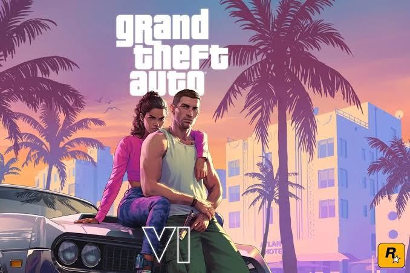

O FIFA é uma famosa franquia de jogos de futebol que permite aos jogadores vivenciar a emoção do esporte virtualmente. Desenvolvido pela EA Sports, o jogo oferece partidas entre clubes e seleções, campeonatos, modos de carreira e partidas online. Ao longo dos anos, a franquia conquistou milhões de fãs por seus gráficos, jogabilidade e pela presença de jogadores e equipes reais. Atualmente, a série segue com o nome EA Sports FC, mantendo a tradição de proporcionar uma experiência de futebol cada vez mais realista e divertida.

God of War é uma franquia de jogos de ação e aventura desenvolvida pela Santa Monica Studio e publicada pela Sony. A série acompanha Kratos, um guerreiro que enfrenta deuses, monstros e criaturas mitológicas em jornadas marcadas por batalhas intensas e histórias emocionantes. Os primeiros jogos exploram principalmente a mitologia grega, enquanto os títulos mais recentes apresentam a mitologia nórdica. Além do combate, a franquia se destaca pelos gráficos impressionantes, pela narrativa envolvente e pela evolução de Kratos como personagem, especialmente em sua relação com seu filho Atreus. God of War é considerada uma das séries mais importantes e reconhecidas do mundo dos games.

Grand Theft Auto, conhecido como GTA, é uma franquia de jogos de mundo aberto desenvolvida pela Rockstar Games. Seus jogos permitem que os jogadores explorem grandes cidades, dirijam veículos, realizem missões e acompanhem histórias cheias de ação e personagens marcantes. Uma das principais características da série é a liberdade oferecida ao jogador, que pode explorar o cenário e realizar diversas atividades. Além do entretenimento, GTA também apresenta sátiras sociais, críticas à sociedade e referências à cultura contemporânea, tornando-se uma das franquias mais populares da história dos videogames.